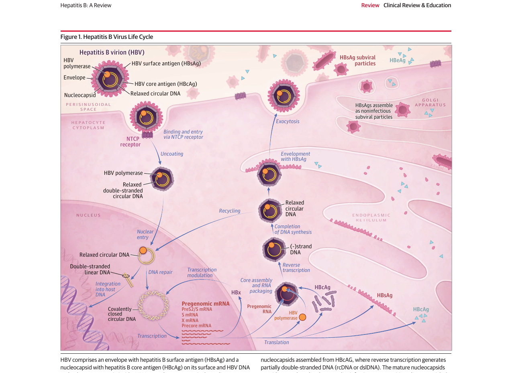
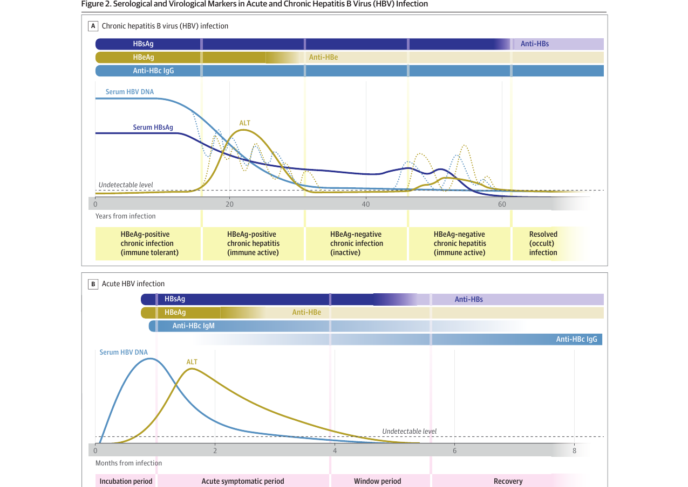
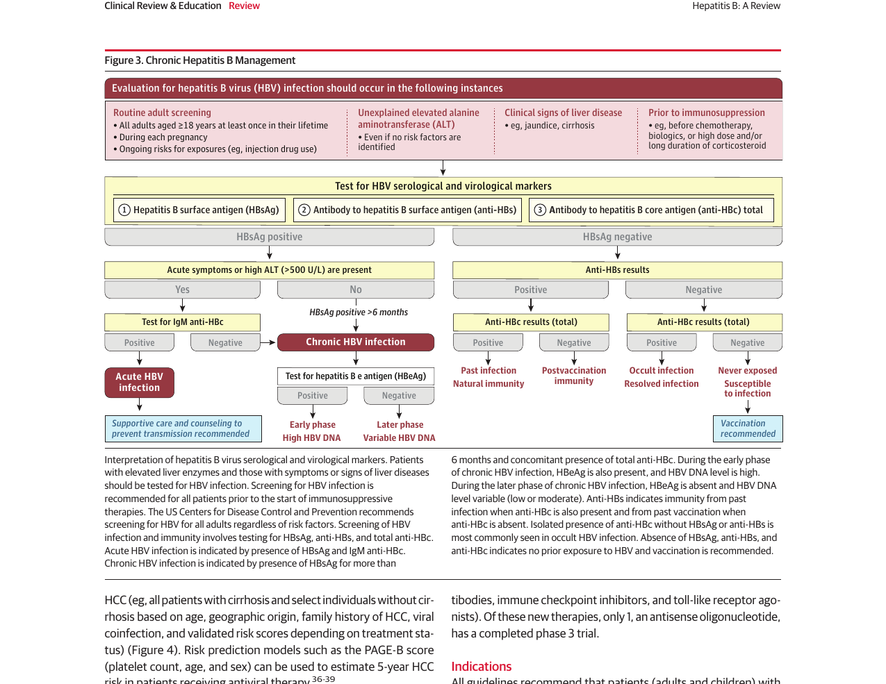
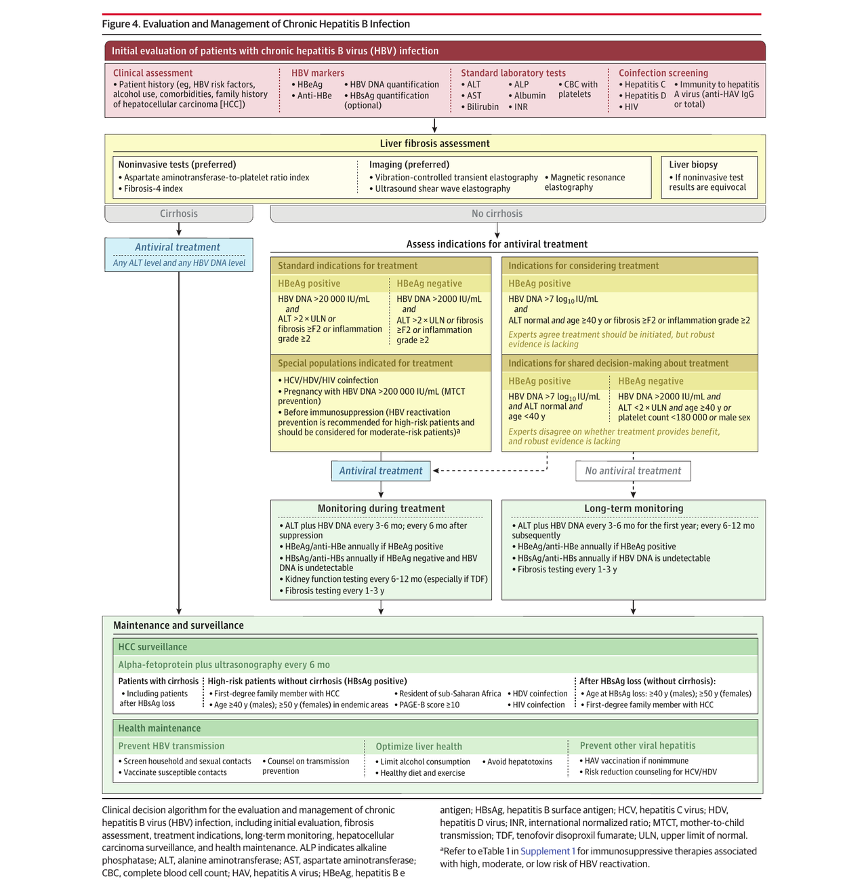

本ページで使用する略語一覧
| 略語 | 正式名称 — 日本語訳 |
| HBV | Hepatitis B Virus — B型肝炎ウイルス |
| HBsAg | Hepatitis B Surface Antigen — B型肝炎表面抗原 |
| Anti-HBs | Antibody to HBsAg — HBs抗体（免疫の指標） |
| HBeAg | Hepatitis B e Antigen — B型肝炎e抗原（ウイルス複製活性の指標） |
| Anti-HBe | Antibody to HBeAg — HBe抗体 |
| HBcAg | Hepatitis B Core Antigen — B型肝炎コア抗原 |
| Anti-HBc | Antibody to HBcAg — HBc抗体（既往または現感染の指標） |
| cccDNA | Covalently Closed Circular DNA — 共有結合閉環状DNA（核内持続鋳型） |
| rcDNA | Relaxed Circular DNA — 弛緩型環状DNA |
| pgRNA | Pregenomic RNA — プレゲノムRNA（逆転写鋳型） |
| NTCP | Sodium Taurocholate Cotransporting Polypeptide — ナトリウム依存性タウロコール酸共輸送体（HBV受容体） |
| ALT | Alanine Aminotransferase — アラニンアミノトランスフェラーゼ（GPT） |
| AST | Aspartate Aminotransferase — アスパラギン酸アミノトランスフェラーゼ（GOT） |
| HCC | Hepatocellular Carcinoma — 肝細胞癌 |
| NUC / NA | Nucleos(t)ide Analogue — 核酸アナログ（抗ウイルス薬） |
| ETV | Entecavir — エンテカビル |
| TDF | Tenofovir Disoproxil Fumarate — テノホビルジソプロキシルフマル酸塩 |
| TAF | Tenofovir Alafenamide — テノホビルアラフェナミド（腎・骨毒性↓） |
| PegIFN | Pegylated Interferon Alfa — ペグインターフェロンアルファ（有限期間療法） |
| APRI | AST-to-Platelet Ratio Index — AST血小板比指数（非侵襲的線維化マーカー） |
| FIB-4 | Fibrosis-4 Index — 線維化4指数（年齢・AST・ALT・血小板） |
| TE | Transient Elastography — 肝弾性測定（FibroScan） |
| AFP | Alpha-Fetoprotein — アルファフェトプロテイン（HCC腫瘍マーカー） |
| MTCT | Mother-to-Child Transmission — 母子感染 |
| HBIG | Hepatitis B Immune Globulin — B型肝炎免疫グロブリン |
| ULN | Upper Limit of Normal — 基準値上限 |
| PAGE-B | Platelet-Age-Gender-B risk score — 治療中患者のHCCリスクスコア（NUC治療中） |
| HCV / HDV | Hepatitis C Virus / Hepatitis D Virus — C型/D型肝炎ウイルス |
| AASLD | American Association for the Study of Liver Diseases — 米国肝臓学会 |
| EASL | European Association for the Study of the Liver — 欧州肝臓学会 |
| APASL | Asian Pacific Association for the Study of the Liver — アジア太平洋肝臓学会 |
| HepB-CpG | Hepatitis B Vaccine with CpG Adjuvant — CpGアジュバントHBVワクチン（Heplisav-B、2回接種） |
SECTION 1 疫学と感染経路
世界の疫学
WHOの推計によると、2022年時点で世界全体で約2.54億人がHBV感染（世界有病率約3.2%）を抱えており、年間新規感染者は約120万人、HBV関連死亡は年間約110万人である。米国CDCの推計では2022年の年間新規感染数は14,000人であり、有病率は0.3%未満（約64万人）であるが、コミュニティベースの推計では最大240万人に達するとされる。
HBVの流行度はHBsAg有病率によって高度流行地域（≥8%）・中等度流行地域（2〜7%）・低流行地域（<2%）に分類される。サハラ以南アフリカと東南アジアの一部が高度流行地域であり、北米・西欧・オーストラリアは低流行地域である。
感染者数（2022）
年間死亡者数
新規感染者数
感染経路と慢性化リスク
HBVは経皮的または粘膜経路で感染した血液・体液（精液等）を介して伝播する。主な経路は①母子感染（周産期）、②性的接触、③注射薬物使用（針共有）、④医療行為における針刺し・輸血、⑤カミソリ・歯ブラシ等の共用である。HBVは環境表面で少なくとも7日間感染性を保持する。
母子感染は世界全体で慢性HBV感染の主因である。HBsAg陽性かつHBeAg陽性母体から生まれた乳児の70〜90%に感染し、HBsAg陽性/HBeAg陰性母体では5〜20%に感染する。アジアでは母子感染が主体であるのに対し、欧米では性的接触・注射薬物使用が主体である。
慢性化（HBsAg陽性6ヶ月以上）のリスクは感染時期に大きく依存する：出生時の感染では約90%が慢性化し、1〜5歳では約30%、免疫正常な青年・成人では≤5%である。
慢性化率
慢性化率
慢性化率
SECTION 2 ウイルス学と病態生理
HBVの構造と生活環
HBVはHepadnaviridae科に属する小型・エンベロープ付きDNAウイルスであり、ゲノムは約3.2 kbの部分二本鎖環状DNAである。少なくとも10種のジェノタイプ（A〜J）が存在する。ジェノタイプAおよびB（Bは部分的）はPegIFN治療後のHBsAg消失率が高く、ジェノタイプCおよびFはHCCリスクが高い。
侵入経路：HBVは胆汁酸トランスポーターであるNTCP受容体を介して肝細胞に侵入する。侵入・脱外被後、rcDNAが核内に輸送されてcccDNA（共有結合閉環状DNA）へと変換される。cccDNAはすべてのウイルスRNA（pgRNAおよびmRNA）の転写鋳型となり、核内に持続する。
複製機構：pgRNAはHBVポリメラーゼとともにヌクレオカプシドに取り込まれ、逆転写によりrcDNAまたは二本鎖線状DNA（dslDNA）が産生される。成熟ヌクレオカプシドはエンベロープを獲得して感染性ビリオン（Dane粒子）として分泌されるか、または核内cccDNAプールを補充するためにリサイクルされる。非感染性のサブウイルス粒子（SVP）も大量に産生される。HBeAgはprecore/coreタンパク質から分泌されるタンパク質である。

© 2026 American Medical Association. From: JAMA. Published online May 4, 2026. doi:10.1001/jama.2026.6070
肝障害の機序
HBVは非細胞傷害性ウイルスであり、直接的な細胞毒性はない。肝障害は主に免疫介在性である。免疫正常な成人の急性HBV感染では約95%が自然免疫応答により回復する。慢性HBV感染患者ではHBVに対する免疫応答が障害されている。免疫介在性の肝障害・炎症・再生のサイクルが繰り返されることで線維化・肝硬変が進行し、ウイルスのゲノム組み込みとともに肝発癌に関与する。
SECTION 3 慢性HBV感染の自然経過
慢性感染の5相
慢性HBV感染はすべての患者が全フェーズを経るわけではなく、各相の期間は5年未満から50年以上まで多様に異なる。各相は以下のように定義される。
| 相 | 名称 | 特徴（HBV DNA・ALT・HBsAg） |
|---|---|---|
| 第1相 | HBeAg陽性慢性感染 （免疫寛容期） |
HBeAg陽性、HBV DNA非常に高値（>7 log₁₀ IU/mL）、ALT正常、HBsAg高値。肝炎・線維化は軽微。周産期感染の小児・若年成人に多い |
| 第2相 | HBeAg陽性慢性肝炎 （免疫活性期） |
HBeAg陽性、HBV DNA高値だが低下傾向、ALT上昇または変動、HBsAg低下傾向。免疫による感染肝細胞の排除が反映 |
| 第3相 | HBeAg陰性慢性感染 （非活動期） |
HBeAg→抗HBe血清転換、HBV DNA低値（通常<2,000 IU/mL）または陰性、ALT正常。HBsAg低値 |
| 第4相 | HBeAg陰性慢性肝炎 （免疫再活性期） |
HBeAg陰性、HBV DNA >2,000 IU/mL（通常3〜5 log₁₀ IU/mL以上）、ALT変動または上昇。HBsAg低〜中等度 |
| 第5相 | 消失（潜伏）感染 （resolved/occult） |
HBsAg陰性、抗HBs出現（時間をおいて）、血清HBV DNA通常陰性。ただし肝内にはHBV DNAが持続 |
HBsAg消失率は年間約1%であり、50〜60歳以降では年間1.7%に増加する。

© 2026 American Medical Association. From: JAMA. Published online May 4, 2026. doi:10.1001/jama.2026.6070
急性HBV感染と増悪
急性感染：曝露後の平均潜伏期間は約90日間であり、50〜70%は無症状である。症状のある患者では倦怠感・発熱・食欲不振が多い。免疫正常成人の約95%は自然回復するが、0.1〜0.5%は急性肝不全（脳症・黄疸・凝固障害）に進行する。
増悪（フレア）：慢性HBV感染の増悪はHBV DNA複製の急激な増加を伴い、自然発症または免疫抑制療法・肝毒性薬・他肝炎ウイルス重感染・抗ウイルス薬中止により引き起こされる。重症増悪ではALT >1,000 U/Lに達することがあり、急性肝炎と誤診されることもある。
SUMMARY 第1章のキーメッセージ
SECTION 1 スクリーニング
CDCスクリーニング推奨（2022年）
慢性HBV感染は進行した肝疾患が出るまで無症状であることが多いため、早期診断が重要である。米国CDCは以下のスクリーニングを推奨している。
- 18歳以上の全成人：生涯に少なくとも1回、HBsAg・抗HBs・抗HBc（総）による3点セットのスクリーニング
- 妊娠中：各妊娠時に毎回実施
- 継続的リスクのある者：定期的スクリーニング（注射薬物使用者、不特定多数との性的接触者 など）
SECTION 2 血清学的・ウイルス学的診断
各マーカーの意義
| マーカー | 臨床的意義 |
|---|---|
| HBsAg | 感染の血清学的指標。6ヶ月以上陽性 → 慢性感染と定義 |
| 抗HBs | 免疫の指標。抗HBcも陽性なら過去感染による免疫、抗HBcなしならワクチンによる免疫 |
| HBeAg | ウイルス複製活性が高い指標（感染初期・免疫寛容期・免疫活性期） |
| IgM抗HBc | 急性感染の指標。HBsAg消失後・抗HBs出現前のウインドウ期に唯一検出されるマーカー。重症フレア時に慢性感染でも低力価で陽性になる場合あり |
| IgG抗HBc（総抗HBc） | 現感染または過去感染の指標。慢性感染ではHBsAgとともに持続陽性 |
| HBV DNA定量 | ウイルス複製活性の定量。治療適応・治療効果判定の主要指標 |
孤立性抗HBc陽性の解釈
HBsAg陰性・抗HBs陰性・抗HBc（総）陽性の場合、以下の鑑別が必要である：①抗HBs力価の低下を伴う過去感染回復、②潜伏HBV感染（HBsAg消失後も血清HBV DNAは陰性だが肝内にはHBV DNA持続）、③偽陽性。追加検査（HBV DNA測定またはHBVワクチン接種による免疫記憶応答の確認）が有用な場合がある。
線維化評価
慢性HBV感染の初期評価においては、線維化ステージが治療適応とHCCリスク層別化に影響するため、全例で非侵襲的線維化評価を行う。
- 血液検査：APRI（AST血小板比）、FIB-4（年齢・AST・ALT・血小板）— 初期評価に広く使用
- 画像的方法（推奨）：振動制御型トランジェントエラストグラフィ（VCTE/FibroScan）、超音波シアウェーブエラストグラフィ（SWE）、MRエラストグラフィ（MRE）— より精度が高い
- 肝生検：非侵襲的検査の結果が不確実な場合に限定
非侵襲的検査の診断精度（有意線維化 ≥F2 vs. 肝生検比較）：感度 約79%、特異度 約78%。

© 2026 American Medical Association. From: JAMA. Published online May 4, 2026. doi:10.1001/jama.2026.6070
SUMMARY 第2章のキーメッセージ
SECTION 1 初期評価と総合管理方針
治療目標と初期評価
慢性HBV感染に対する抗ウイルス治療の目標は、肝硬変・肝不全・HCCへの進展を防ぐことである。治療適応の判断には初期評価として以下を行う：HBV複製評価（HBV DNA定量）、肝活動度・線維化ステージ評価（ALT・非侵襲的線維化検査）、共感染スクリーニング（HIV・HCV・HDV・HAV免疫状態）。治療中または治療外の患者ともに定期モニタリングが必要である。

© 2026 American Medical Association. From: JAMA. Published online May 4, 2026. doi:10.1001/jama.2026.6070
SECTION 2 治療適応：国際ガイドライン比較（Table 1）
国際4ガイドラインの治療適応まとめ（Table 1）
すべてのガイドラインが共通して「肝硬変患者でHBV DNA検出可能な全例に抗ウイルス治療を推奨」する。非肝硬変患者の治療開始基準は各ガイドラインで異なる。
| カテゴリー | APASL 2016 | AASLD 2018/2025 | EASL 2025 | WHO 2024 |
|---|---|---|---|---|
| 肝硬変 | HBV DNA検出可能な全例に治療推奨（ALT・HBV DNAレベルに関わらず） | |||
| 非肝硬変 HBeAg陽性 |
HBV DNA >20,000 IU/mL かつ ALT >2×ULN または 線維化≥F2 ULN: 40 U/L |
HBV DNA >20,000 IU/mL かつ ALT >2×ULN または 線維化≥F2 2025年：免疫寛容期40歳以上は治療検討可 |
線維化≥F2（APRI >0.5 または TE >7 kPa）単独 または HBV DNA ≥2,000 IU/mL かつ ALT >ULN×2回以上 | HBV DNA >2,000 IU/mL（HBeAg問わず）かつ ALT >ULN または 線維化≥F2 HBV DNA測定不要なリソース制限設定向け |
| 非肝硬変 HBeAg陰性 |
HBV DNA >2,000 IU/mL かつ ALT >2×ULN または 線維化≥F2 | HBV DNA >2,000 IU/mL かつ ALT >2×ULN または 線維化≥F2 2025年：不確定期（ALT 1〜2×ULN）で40歳超・男性・血小板低値なら治療検討 |
（HBeAg陽性と同じ）線維化≥F2 または HBV DNA ≥2,000 IU/mL かつ ALT >ULN | HBV DNA >2,000 IU/mL かつ ALT >ULN または 線維化≥F2 |
| 特殊集団 | HCV/HDV/HIV重感染、HBV DNA >200,000 IU/mLの妊婦（MTCT予防）、高リスク免疫抑制療法前後（HBV再活性化予防） | |||
AASLD: American Association for the Study of Liver Diseases；APASL: Asian Pacific Association for the Study of the Liver；EASL: European Association for the Study of the Liver；F: METAVIRステージ（F0〜F4）；TE: トランジェントエラストグラフィ；ULN: 基準値上限
SECTION 3 核酸アナログ（NUC）療法
現在使用される一線NUC（Table 2：薬剤概要）
NUCはHBV DNA複製を阻害する経口薬であり、現在使用されるETV・TDF・TAFでは10年間の単剤治療で耐性は確認されていない。
NUC治療の効果（week 48 成績）
ETV・TDF・TAFいずれも高い抗ウイルス効果を示すが、HBsAg消失率は1年で低い。長期治療（7〜10年）でも累積HBsAg消失は3〜5%にとどまる。
| エンドポイント | week 48 成績（%） | |||
|---|---|---|---|---|
| ETV | TDF | TAF | PegIFN | |
| HBeAg陽性患者 | ||||
| HBV DNA抑制 | 67% | 76% | 64% | 25% |
| HBeAg血清転換 | 21% | 21% | 10% | 27% |
| HBsAg消失 | 2% | 3% | 1% | 3% |
| HBeAg陰性患者 | ||||
| HBV DNA抑制 | 90% | 93% | 94% | 63% |
| HBsAg消失 | <1% | 0% | 0% | 4% |
| 長期成績（NUC継続治療中） | ||||
| HBsAg消失 | 4〜5%（10年） | 3〜5%（10年） | 3%（8年） | 8〜11%（3年後・治療終了） |
| HBV DNA抑制 | 97%（10年） | 98%（10年） | 95%（8年） | 25%（3年後・治療終了） |
HBV DNA抑制の定義：HBV DNA <20〜60 IU/mL（アッセイにより異なる）
NUC中止と再発リスク
HBsAg消失前にNUCを中止した場合、ウイルス再燃は必発である。肝硬変患者ではフレアリスクがあるため、ガイドラインは無期限継続を推奨する。
HBeAg陽性・非肝硬変患者：HBeAg→抗HBe血清転換後に1年以上の確認療法を完了後に中止を検討できる（一部GL）。中止後は密なモニタリングが必須。
HBeAg陰性・非肝硬変患者：一部のGL（APASL・EASL）では3年以上のHBV DNA陰性化後に中止可能とする。中止後のウイルス学的再燃は65〜80%、肝炎フレアは15〜30%、肝機能不全は<1〜1.8%（主に肝硬変患者）。一方、NUC中止後のHBsAg消失率は4〜5年で4〜39%と継続治療（年1%未満）と比べて高い。
HBsAg消失の予測因子：NUC中止時のHBsAg低値（<100 IU/mL）が最強の予測因子。白人はアジア人に比べてHBsAg消失の確率が8.3倍高い（感染年齢・免疫回復の差を反映）。
SECTION 4 ペグインターフェロンアルファ（PegIFN）
PegIFN：概要と効果
PegIFNは週1回皮下注射を48週間実施する有限期間治療（finite therapy）であり、抗ウイルス効果と免疫調節効果の両方を持つ。
HBeAg陽性患者（48週）：HBeAg血清転換約30%、HBsAg消失8〜14%（3年追跡）。
HBeAg陰性患者：HBV DNA <2,000 IU/mL達成率は治療終了後3年で20〜25%。
奏効予測因子（HBeAg陽性）：高ALT・低HBV DNA・ジェノタイプA・B。いずれのHBeAg状態でも、治療12週時点でHBsAgが低下しなければ奏効なしと予測できる。
SECTION 5 長期効果・治療効果判定・モニタリング
長期抗ウイルス治療の有益性
PegIFNとNUCはともに肝硬変進展・肝不全・HCC・死亡を減少させる。長期NUC療法は線維化の改善・肝硬変の回復をもたらす。59研究（RCT 15件・観察研究44件）のメタ解析では、長期NUC療法は未治療と比べてHCC発生を有意に低下させ、pooled RRは肝硬変あり患者で0.57、なし患者で0.50であった。
ただしNUC治療中でもHCCリスクは残存するため、特に肝硬変患者ではHCCサーベイランスを継続する。HBsAg消失後も、若年（男性40歳未満・女性50歳未満）かつ肝硬変・家族歴がない場合を除き、サーベイランスを継続する。
（肝硬変あり・pooled）
（肝硬変なし・pooled）
HCCリスク低下率
治療中モニタリングスケジュール
| 検査項目 | 頻度（抗ウイルス治療中） |
|---|---|
| HBV DNA + ALT | 3〜6ヶ月ごと（HBV DNA陰性化後は6ヶ月ごと） |
| HBeAg/抗HBe | HBeAg陽性患者では年1回 |
| HBsAg/抗HBs | HBeAg陰性かつHBV DNA陰性の患者では年1回 |
| 腎機能 | 6〜12ヶ月ごと（特にTDF使用患者） |
| 線維化評価 | 1〜3年ごと |
| PegIFN中 CBC + ALT |
毎月；甲状腺機能は3ヶ月ごと；HBV DNAは3ヶ月ごと |
SECTION 6 特殊集団における管理
HIV/HBV重感染
HIV/HBV重感染は単独感染と比べて肝硬変・肝不全・HCCへの進展が早い。HIV/HBV重感染患者全員に、両ウイルスを標的とする抗レトロウイルス療法（TDFまたはTAFを含む）を実施する。
免疫抑制療法患者におけるHBV再活性化
コルチコステロイド・リツキシマブ・癌治療・免疫調節生物製剤・カルシニューリン阻害薬などの免疫抑制療法によりHBV再活性化が起こりうる。免疫抑制療法を開始するすべての患者にHBsAg・抗HBs・抗HBcのスクリーニングを行う。
- HBsAg陽性患者：HBV DNA測定を行い、高リスク免疫抑制療法では予防的抗ウイルス（ETV・TDF・TAF）を推奨、中等度リスクでは提案する
- 孤立性抗HBc陽性患者：HBV DNA測定を行い、リスクに応じてモニタリングまたは予防投与
- 低リスク免疫抑制療法：HBV再活性化の最初の徴候（ALTまたはHBV DNA上昇）で抗ウイルス治療を開始
SUMMARY 第3章のキーメッセージ
SECTION 1 肝関連予後とHCCサーベイランス
未治療慢性HBVの予後
肝関連予後は宿主因子（男性・年齢>40歳・HCC家族歴）、ウイルス因子（HBV DNA・ジェノタイプ・共感染）、環境因子（喫煙・飲酒）、合併症（糖尿病・代謝性肝疾患）に依存する。
5年肝硬変リスク
5年肝機能不全リスク
HCCリスク低下
HCC年間発生率（段階的増加）
| 病期・病態 | 年間HCC発生率 |
|---|---|
| HBeAg陰性非活動期 | 0.05%/年 |
| 免疫活性期 | 0.42%/年 |
| 代償性肝硬変 | 3%/年 |
| 非代償性肝硬変 | 4〜5%/年 |
HBsAg消失後のHCCリスクは約70%低下し、特に50歳未満・肝硬変なし・家族歴なしでHBsAg消失した場合に最も良好な予後が期待できる。
HCCサーベイランス適応
HCCリスクが高い患者には腹部エコー + AFP測定を6ヶ月ごとに実施する。
- 肝硬変全例（治療中・未治療を問わず）
- 非肝硬変患者のうち高リスク：男性40歳超・女性50歳超、サハラ以南アフリカ在住者、HCC家族歴（一親等）、HDV/HIV重感染、PAGE-B スコア ≥10（NUC治療中）
- HBsAg消失後も継続が必要な場合：HBsAg消失時に男性40歳以上・女性50歳以上、または肝硬変・HCC家族歴がある場合
SECTION 2 HBVワクチン接種（Table 3）
ワクチン接種の対象と推奨（CDCガイドライン 2022）
HBVワクチンはHBV感染予防の最も有効な手段であり、免疫正常者の95%に防御抗体（抗HBs ≥10 mIU/mL）を誘導し、35年以上防御効果が持続する。
| 対象集団 | 推奨内容 |
|---|---|
| 新生児 | 出生後24時間以内（理想は12時間以内）に初回接種 |
| 小児・青年 | 18歳以下で未接種の全員に接種 |
| 成人 19〜59歳 | 普遍的接種推奨（2022年CDC拡大推奨） |
| 成人 ≥60歳 | リスク因子あり、または接種を希望する場合に共有意思決定のうえ接種 |
| 妊婦 | 適応がある場合は妊娠中の接種も可能（全承認ワクチンが使用可） |
| 高リスク集団 | 医療従事者・注射薬物使用者・HIV/HCV感染者・血液透析患者・HBsAg陽性者の性的/家庭内接触者 など |
ワクチンの種類
（Engerix-B / Recombivax HB）
（Heplisav-B）
ワクチン非応答の関連因子：40歳超・肥満・喫煙・糖尿病・肝硬変・慢性腎臓病・HIV感染・免疫抑制。
SECTION 3 曝露後予防（PEP）と母子感染予防（MTCT）
曝露後予防（Postexposure Prophylaxis）
高リスク曝露後（HBsAg陽性者からの刺傷・HBsAg陽性者との無防備な性的接触・周産期曝露）に適応となる。
HBIG 投与：できるだけ24時間以内に投与（遅くとも曝露後7日以内）
ワクチン開始：未接種者は同時にHBVワクチンシリーズを開始
既知の非応答者：HBIG単独（1ヶ月後に追加投与）を推奨
母子感染予防（Mother-to-Child Transmission Prevention）
母子感染はHBsAg陽性かつHBeAg陽性母体から70〜90%の乳児に感染し、世界の慢性HBV感染の主因である。予防のための3本柱は以下の通り。
妊婦の普遍的HBsAgスクリーニング：HBsAg陽性者にはHBV DNA測定を追加
出生直後の受動能動免疫（最重要）：HBsAg陽性母体から生まれた新生児に出生後12〜24時間以内にHBIG + HBVワクチン初回接種。周産期感染の約94%を予防
母体への抗ウイルス治療：HBV DNA >200,000 IU/mLの妊婦に妊娠28〜32週からTDF（またはTAF）投与。受動能動免疫と組み合わせることで感染率を<1%まで低下
周産期感染予防効果
での感染率
世界の出生時接種率
SUMMARY 第4章のキーメッセージ
出典：Jeng WJ, Yip TCF, Lok AS. Hepatitis B: A Review. JAMA. Published online May 4, 2026.
DOI：https://doi.org/10.1001/jama.2026.6070
本資料は教育目的で作成したサマリーです。診断・治療方針の決定には必ず原典ガイドラインを参照してください。
制作：ICU 関谷